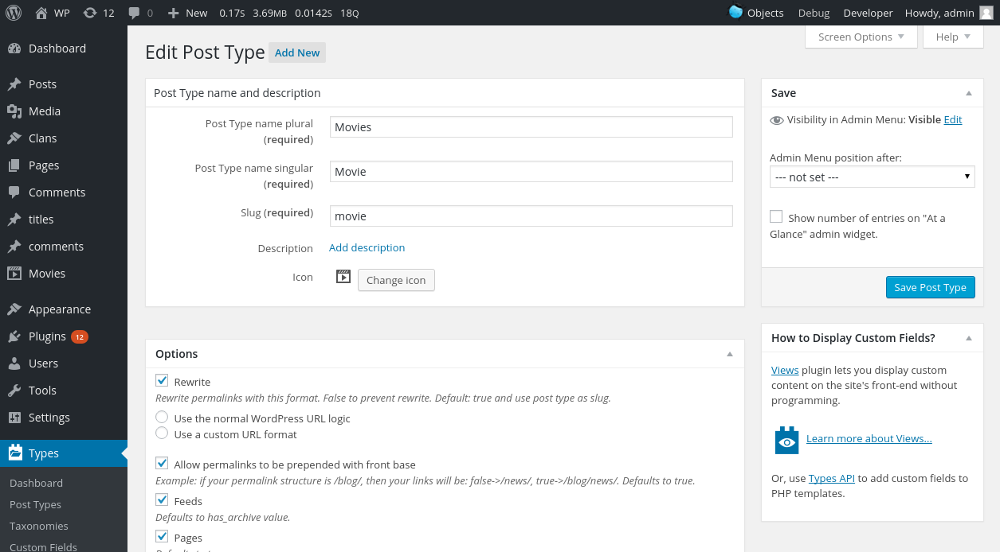
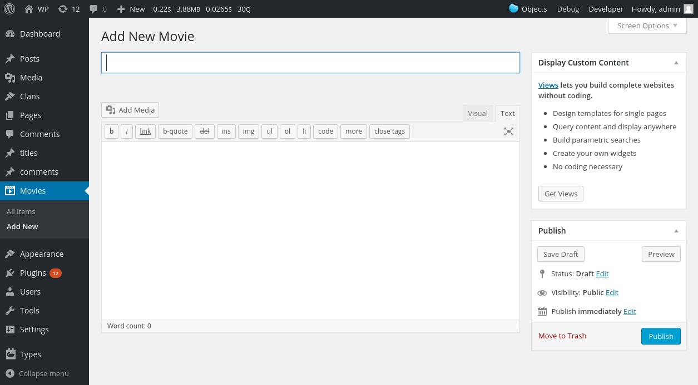
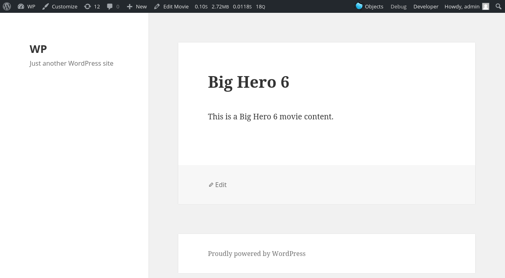

Co z niego za typ?
zalety i wady
Marcin Pietrzak
Marcin Pietrzak
- OnTheGo Systems
- Types
- WordPress
Cel
- zapoznaj się
- zalety
- wady
- użyj
Krótki opis tego co będzie w prezentacji.
Typy wpisów
- czym są
- do czego
- wbudowane
- własne
Typy wpisów to definicje najważniejsze jednostki informacji jaką zapisuje
WordPress.
Organizują dane, które wprowadzamy i pozwalają na pierwszą hierarchizację
Używamy ich w codziennej pracy z WordPressem. Szczególnie tych wbudowanych:
wpis, strona, plik, wersja ale także ... element menu.
Własne typy to takie, które sobie sami zdefiniujemy.
Wbudowane
- wpis
- strona
- plik
- wersja
- element menu
Wpis - typ wpisu używany zazwyczaj na blogu, wyświetlany w odwrotnej
kolejności od daty publikacji (najnowsze wcześniej), jako jedyny typ wpisu
występuje w feedach.
Strona - prawie jak wpis, ale bez struktury odnośników, przy ładnych linkach
występuję od głównego adresu strony, zazwyczaj posiada własny szablon
w motywie. Może być organizowany hierarchicznie - strona może być dzieckiem
innej strony.
Plik - specjalny typ wpisu utworzony tylko po to, żeby wygodnie trzymać
informacje związane z plikiem dodawanym do serwisu, niezależnie od tego jaki
to plik, możemy dodać mu choćby tytuł. Pliki nie są hierarchiczne, ale mogą
posiadać rodzica.
Wersja - kolejny specjalny typ, wykorzystywany do trzymania poprzednich wersji
innych typów. Jako rodzica zawsze ma ustawiony ten element w bazie, który jest
aktualny.
Element menu - zawiera informację o pojedynczym elemencie w menu. Jest bardzo
dobrym przykładam wykorzystania struktury danych do przechowywania czegoś
innego niż treść.
Prostota
- skupienie się na treści
- porządek
- brak na liście wpisów
Funkcjonalny podział treści bardzo ułatwia życie niezaawansowanym użytkownikom.
"Dodaj recenzję filmu" nabiera inne znaczenia niż "Dodaj wpis, zmień kategorię
na 'recenzja filmu'".
Porządek w strukturze danych - nie musimy szukać, gdzie właściwie są nasze
recenzje filmowe.
Główna lista wpisów serwisu zawiera tylko typy wpisu "wpis" - nie ma w niej
ani stron, ani własnych typów wpisu.
Zalety
- łatwość obsługi
- automatyka panelu
- własne odnośniki
- nie trzeba programisty
Łatwość dodania jest jedną z największych zalet własnych typów wpisów.
Po zdefiniowanie w menu panelu administracyjnego widzimy pozycję zawierającą
zarówno listę wpisów jak i możliwość dodania. Ekran edycji danego typu wpisu
ma odpowiednie boxy z wybranymi właściwościami.
W przypadku użycia ładnych odnośników - własne typy mają je od razu, choć
z pewnym wyjątkiem - należy pamiętać, że reguły ładnych odnośników, wraz
z możliwością podstawiania różnych rzeczy %category%, %year% to cecha
w całości zarezerwowana dla typu "wpis"
Brak konieczności zatrudniania "wiedzącego" znacznie obniża koszty projektu,
dodanie własnego typu wpisu za pomocą wtyczki jest po prostu banalnie łatwe..
Wady
- zgubiłem się
- własne odnośniki
- trzeba programisty
Łatwość dodania może spowodować, że zaczniemy się gubić w menu panelu
administracyjnego, jeżeli pozwolimy sobie na rozpasanie w ilości własnych
typów wpisów, będzie on po prostu maksymalnie zaśmiecony, co doprowadzi do
nieogranialność.
Własne odnośniki wyglądają zawsze jak strony i jedyne co możemy zrobić to
dodać prefiks, a czasem chcielibyśmy inaczej, jak choćby umieścić w odnośniku
do recenzji filmowej gatunek filmu. Niestety, mimo, że możliwe, to nie jest to
już takie proste. (nie jest też jakieś szczególnie trudne).
W przypadku czegoś więcej niż po prostu własny typ treści, jeżeli chcemy też
coś więcej niż taksonomia, czy jakieś pole - wtedy nadal musimy się udać do
naszego ulubionego developera.
Właściwości
- post_type
- label
- labels
- konfiguracja
post_type to najważniejszy identyfikator naszego typu wpisu, może zawierać 20
znaków bez spacji czy wielkich liter. Raz wprowadzone dane, pod postacią wpisu
tego typu, pozostaną wpisem tego typu. (jest możliwość zmiany typu, wymagana
wtyczka lub małe zapytanie do bazy).
label/labels - czyli wszystkie "opisy" naszego typu wpisu, które można zawsze
zmienić, bez uszczerbku dla zgromadzonych danych.
Konfiguracja typu to zestaw różnych cech, które pozwalają na różne zachowanie
i cechy dodawanego typu wpisu.
register_post_type()
function codex_custom_init() {
$args = array(
'public' => true,
'label' => 'Movie'
);
register_post_type( 'movie', $args );
}
add_action( 'init', 'codex_custom_init' );
Wtyczki
- Custom Post Type Maker
- Gravity Forms + Custom Post Types
- Pods
- WCK
- Custom Post Type UI
- Types
jak?
kod - register_post_type
wtyczki - Types,
stan: 24.11.2015 21:00 CET
Custom Post Type Maker - Ostatnia aktualizacja: 5 miesięcy temu 5 000+ aktywnych instalacji
Gravity Forms + Custom Post Types - Ostatnia aktualizacja: 3 godziny temu 10 000+ aktywnych instalacji
Pods - Custom Content Types and Fields - Ostatnia aktualizacja: 2 miesiące temu 30 000+ aktywnych instalacji
WCK - Custom Fields and Custom Post Types Creator Ostatnia aktualizacja: 1 tydzień temu 10 000+ aktywnych
Custom Post Type UI - Ostatnia aktualizacja: 4 miesiące temu 200 000+ aktywnych instalacji (1,163,672) (4.6/107)
Types - Ostatnia aktualizacja: 6 dni temu 200 000+ aktywnych instalacji (1,391,939) (4.4/145)
Types - edycja typu wpisu

Types - dodawanie/edycja wpisu

Types - wygląd gotowego wpisu

Jak pokazać?
- po prostu
- szablon single-$postype.php
- Views
Eksport/Import
- standardowy export
- wtyczka WordPress Importer
- definicje!
Podsumwanie
- własne treści
- własne typy
- Types
- Views
O mnie
- Marcin Pietrzak
- http://iworks.pl/
- marcin@iworks.pl
Licencja
Uznanie autorstwa - Na tych samych warunkach 3.0 Unported (CC BY-SA 3.0)
Wolno:
- kopiować, rozpowszechniać, odtwarzać i wykonywać utwór
- tworzyć utwory zależne
- użytkować utwór w sposób komercyjny
Na następujących warunkach:
- Uznanie autorstwa - Utwór należy oznaczyć w sposób określony przez Twórcę lub Licencjodawcę
- Na tych samych warunkach - Jeśli zmienia się lub przekształca niniejszy utwór, lub tworzy inny na jego podstawie, można rozpowszechniać powstały w ten sposób nowy utwór tylko na podstawie takiej samej licencji.